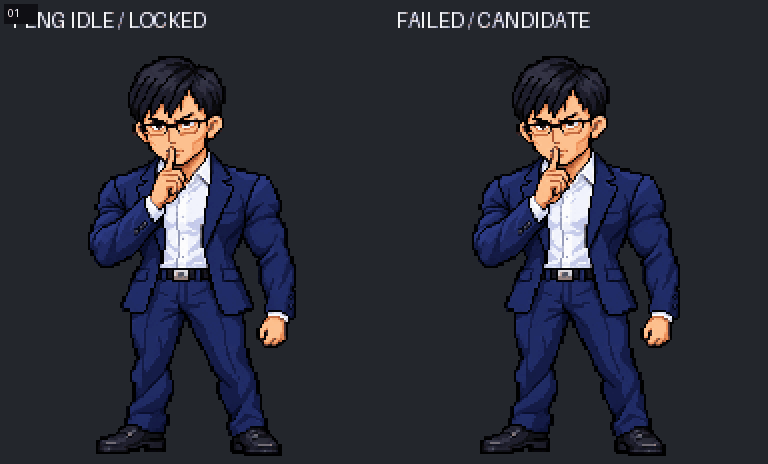
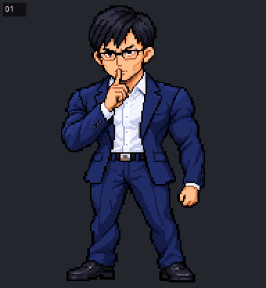
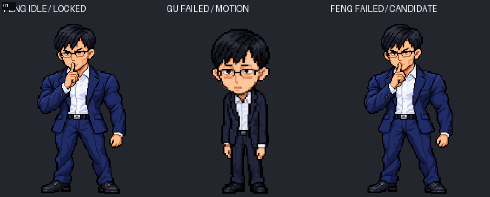
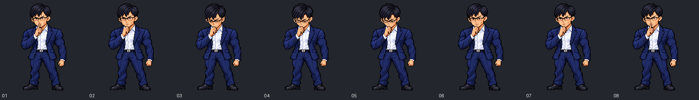
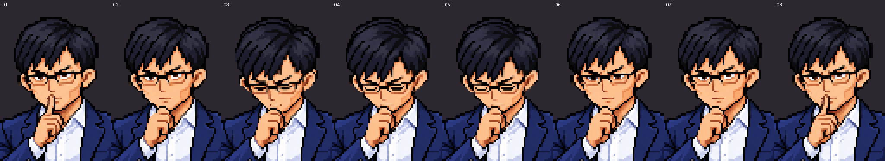
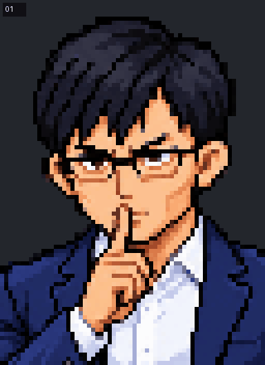
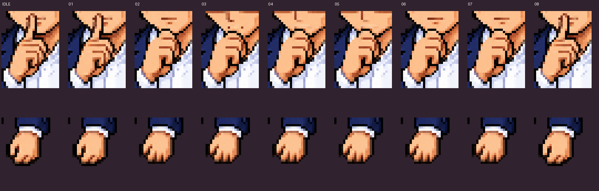

身体、袖口、手肘、领口、腿鞋使用正式 Feng Idle 原像素。只编辑头部与双手手指。 头部参考 Gu Failed 的停顿、低头、闭眼、恢复，不复制 Gu 的人物外观。 头部占位 49×57，脚底 y=203，手腕固定。第 1/8 帧为原 Idle，第 4/5 帧有意停顿。
局部内容使用内置 ImageGen 编辑，按原网格最近邻恢复并映射到 Idle 调色板； 头部轮廓锁定，不代表脸部像素完全相同。已检查静态顺序图，不代表用户美术批准或 App 验收。 正式图集与当前运行 App 均未替换。






